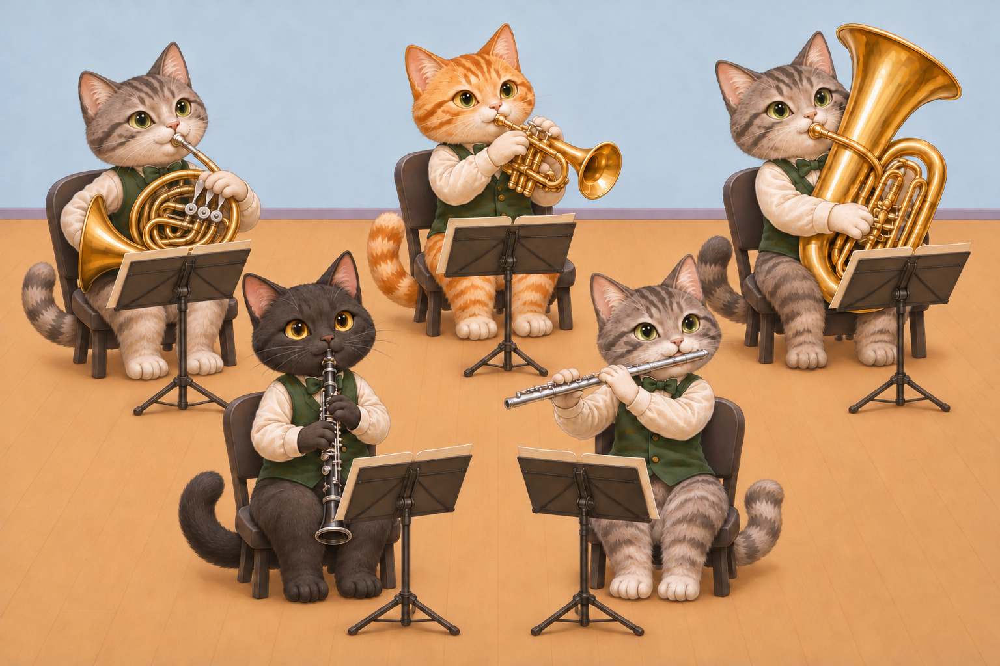

演奏の間違い探し
猫たちの吹奏楽団による「星条旗よ永遠なれ」。譜面を見ながら演奏を聴いて、違ったパートと小節を見つける音楽ゲームです。
初版の公開準備中です。日本語・日本向け。iPhone・iPad、iOS 18以降に対応します。本体無料・広告あり。

遊び方
- 5・12・23・38人の編成、初級・中級・上級、3・5・10か所の問題数を選びます。
- 曲マップのポイントを選び、8小節の演奏を聴きます。お手本と聴き比べたり、譜面で選んだパートだけを聴いたりできます。
- 通常のスコアで、間違ったパートの小節をタップします。「指摘する」でミスの種類を答えてください。奏者個人や何拍目かまでは答えなくて大丈夫です。
- 全問を終えると結果を保存します。ミスの小節を赤く示した譜面で、今回の演奏を通しで振り返れます。
よくある質問
初めてで聴き分けるのが難しい
まず5人・初級・3か所から始めてみてください。「ミスの例を聴く」では、難易度別のお手本とミス入りの実例を比べられます。「はじめての遊び方」は図付きの操作ガイドです。
ヒントは何回使えますか？
問題数と同じ回数を全問で共有します。3問なら合計3回、10問なら合計10回です。1区間では最大2回。1回目はパート、2回目はミスの種類が分かります。ヒントや聴き直しで減点はありません。
譜面を大きくしたい
譜面のピンチ操作、または「＋」「−」で倍率を変えられます。コンデンスは全体の流れを見る参考用の実音譜です。指摘するときは通常のスコアに切り替えてください。
音が出ません
端末の音量と、Bluetoothなどの音声の出力先を確認してください。起動時のタイトル映像は初期状態では無音です。ゲームの再生には、端末内で演奏を作るための準備時間がかかる場合があります。
記録はどこに保存されますか？
途中の演奏と完了した記録は端末内に保存します。「これまでの記録」から振り返れます。クラウド同期・記録の移行機能はありません。アプリを削除すると記録も失われるため、不具合の際は削除する前にお問い合わせください。
通信やアカウントは必要ですか？
ゲームの音源と譜面は同梱し、演奏は端末内で生成します。独自アカウントは不要です。広告、サポートページ、作者の他のアプリ一覧の更新などには通信を使用します。
お問い合わせ
不具合の内容、端末名、iOSのバージョン、アプリのバージョン、起きた操作を添えてthivanao@gmail.comへご連絡ください。個人情報が写る画面は、必要な部分だけをお送りください。